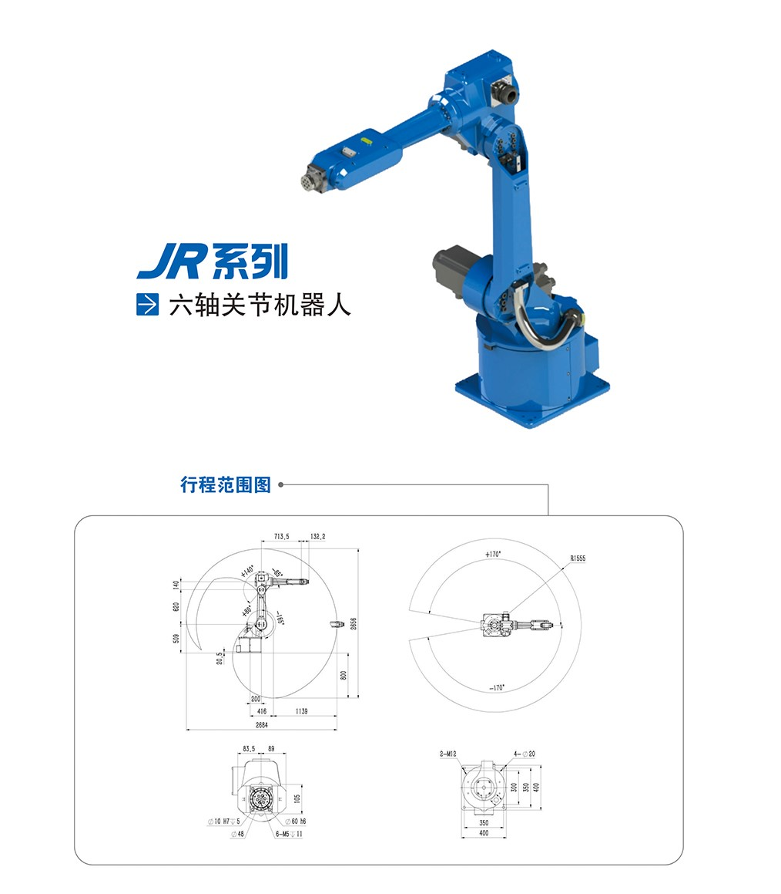

工作空间又叫做工作范围、工作区域、是设备所能达到的所有空间区域。机器人的工作空间是指机器人手臂末端或手腕中心（手臂或手部安装点）所能到达的所有点的集合，不包括手部手部本身所能达到的区域。由于末端执行器的形状和尺寸是多种多样的，为真实反映机器人的特征参数，工作范围是指不安装末端执行器的工作区域。
工作范围的形状和大小是十分重要的，机器人在执行某作业时可能会因存在手部不能到达的作业死区而不能完成任务。

图1-4 机器人外形尺寸和工作空间